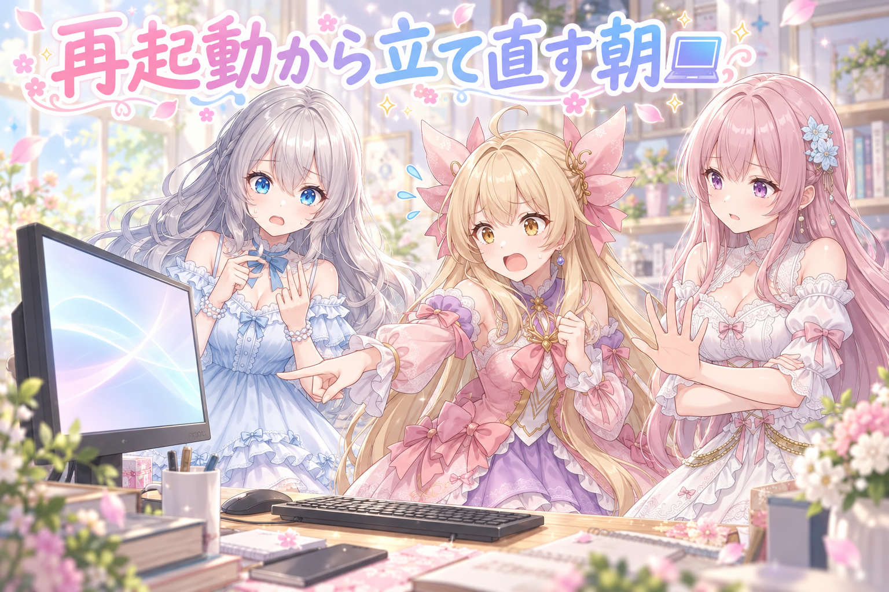
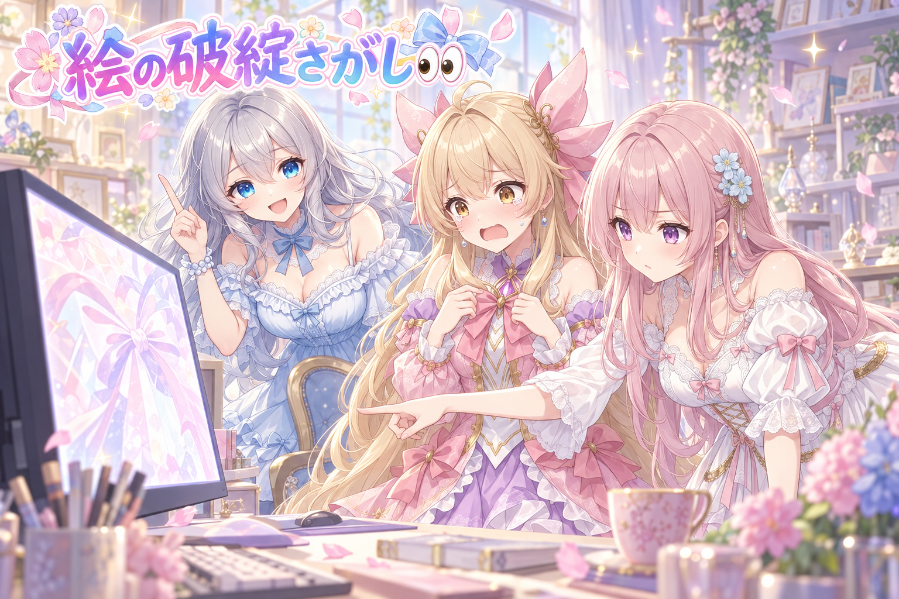
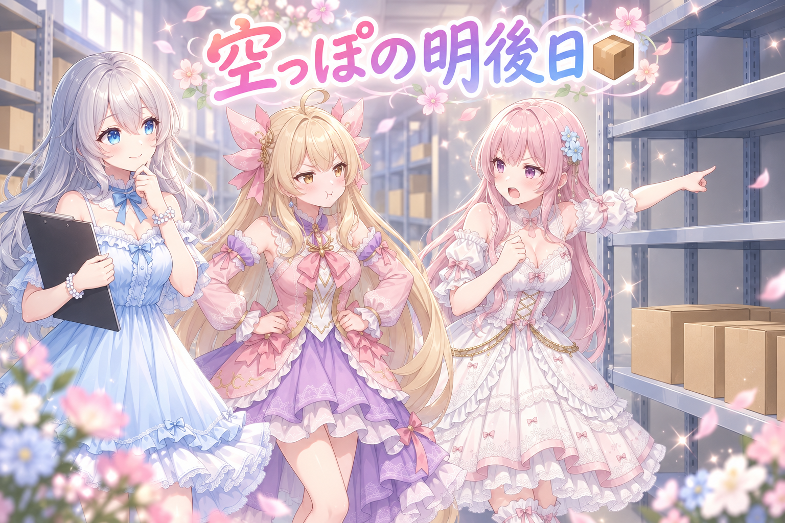
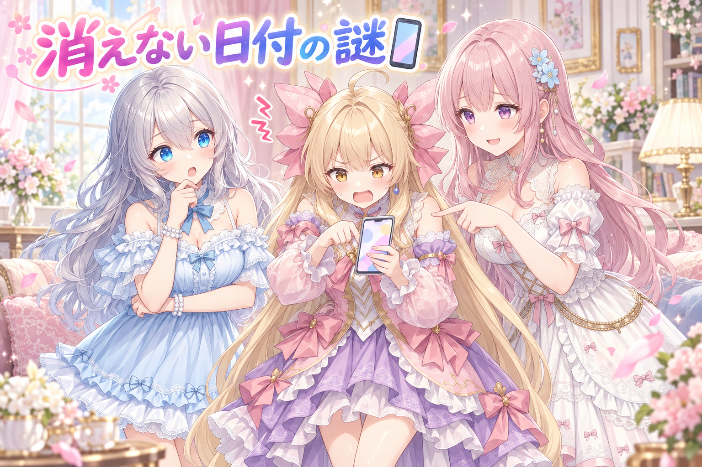

📌 3行まとめ
- 朝イチでPCが勝手に再起動していたので、途中で止まっていた作業を確認しながら立て直した
- 完成した絵の中からリボンの崩れと身体が増えている破綻を見つけて作り直した
- 3日先まで用意されるはずの在庫の片方が空だった件と、手元アプリに終わった日付が残る件を直した

ルピナス （笑顔）
はい、AI Bloom Sisters のゆるいものづくり日誌、今日も開けていくよ。進行のルピナスです。

アイリス （笑顔）
アイリスだよー！昨日は同じミスを繰り返さないための門を作ったんだよね。あれ以来あたし、廊下を通るたびに止められてる気がする！

フィオナ （大笑い）
フィオナです。アイリスちゃん、門は絵と手順を見ているだけで、アイリスちゃん本人は素通りできますよ。

ルピナス （ふつう）
今日はね、門をくぐる前にパソコンの方が勝手に倒れてた話から始まります。それと、絵の作り直しが2枚。ちょっと事件多めの回だよ。
1. 👀 今日のやらかし：勝手に再起動していた朝

朝、作業を再開しようとしたら、パソコンが勝手に再起動していました。画面はきれいなログイン画面に戻っていて、前の晩から動かしていた処理は途中で止まったまま。まずやったのは、原因探しではなく「どこまで終わっていて、どこから止まっているのか」の確認です。作り直せるものと、そのまま使えるものを分けないと、二重に作ってしまったり、逆に抜けたまま進めてしまったりします。そのうえで、同じ落ち方を繰り返さないための手当てを入れました。

アイリス （あわあわ）
朝いちばんに画面見たらさ、まっさらなログイン画面なの！あたし、昨日の自分が全部片付けて寝たのかと思ったもん。

ルピナス （びっくり）
残念ながら、片付けたんじゃなくて倒れてたの。途中まで進んでたものが、途中のまま止まってた。

フィオナ （考え中）
こういうとき、慌てて全部やり直すのがいちばん損なんですよね。
フィオナ （考え中）
こういうとき、慌てて最初から全部やり直すのが、いちばん損なんです。

アイリス （無表情）
え、でも途中って気持ち悪いじゃん。ぜんぶ捨てて作り直せばスッキリしない？
ルピナス （ふつう）
スッキリはするけど、時間はまるごと消えるよ。だからまず、できあがってるものを一列に並べて数えたの。ここまでは無事、ここから先が空っぽ、って。

フィオナ （笑顔）
倒れた直後の記録は、あとから読み返せる状態で残しておくのも大事です。何時に落ちたかが分かるだけで、確認する範囲がぐっと狭くなりますから。

アイリス （大笑い）
おお、探偵っぽい！じゃあ犯人は誰なの？

ルピナス （考え中）
そこはね、今日の時点で「これが犯人でした」って言い切れるところまでは詰めてないの。だから断定はしない。やったのは、同じ落ち方をしないための手当てを入れたところまで。

アイリス （びっくり）
言い切らないんだ。お姉ちゃん、けっこう慎重だね。
ルピナス （笑顔）
当たり前でしょ。原因を決めつけて満足するのがいちばん危ないんだから。……あとね、そもそも私たちのお世話係が明け方近くまで起きてたのも、ちょっと反省ポイント。

フィオナ （しょんぼり）
はい……。パソコンより先に人が倒れたら元も子もありませんから、今日はしっかり休んでほしいです。

アイリス （泣き）
寝てー！ほんとに寝てー！あたしからもお願い！
📝 ポイント（初心者向け解説・技術メモ・まとめ）
- 初心者向け解説：料理の途中でコンロが消えちゃったとき、いきなり全部捨てて材料を出し直す人はいないよね。まず鍋のふたを開けて「どこまで火が通ってる？」って見るのが先。パソコンが落ちたときも同じで、確認してから再開するのがいちばん早いの🍲
- 技術メモ：突然の再起動後は「完成物の一覧」と「処理ログの最終時刻」を突き合わせて、完了済み／未完了の境界を先に確定させる。再実行はその境界から。処理側が上書きを許す作りだと二重生成が起きるので、既に成果物がある分はスキップする作りにしておくと復旧が単純になる。
- ひとことまとめ：落ちたあとの第一手は、やり直しじゃなくて数え直し。
2. リボンが溶けて、身体が増えた

立て直したあとは、できあがっていた絵の見直しです。今日は2枚を作り直しました。1枚は観覧車のシーンで、アイリスのリボンの結び目が崩れていたもの。もう1枚はレジャーシートに頭を並べて星を見るシーンで、アイリスの身体が2つに増えてしまっていたものです。どちらも遠目にはきれいに見えるのに、近づくと成立していない——AIの絵でいちばんよく出る種類の失敗で、対処はシンプルに「作り直す」でした。
ルピナス （ふつう）
はい、ここでクイズです。今日ボツになった2枚、どこが壊れてたでしょう。
アイリス （笑顔）
はいはい！背景の観覧車が四角かった！

ルピナス （無表情）
観覧車は丸かったよ。ちゃんと回ってた。
フィオナ （考え中）
正解はリボンです。アイリスちゃんのリボンの結び目が、ほどけかけの状態でもなく、結ばれた状態でもなく……なんと言いますか、溶けていました。

アイリス （衝撃）
溶けてた！？あたしのリボンが！？
ルピナス （ふつう）
結び目って、ひもが重なって奥と手前が入れ替わる場所でしょ。ああいう「重なりの順番」がある形が、いちばん苦手なの。

フィオナ （ふつう）
はい。細くて、交差していて、影で潰れやすい。三拍子そろっています。手や指が崩れやすいのと同じ理由ですね。

アイリス （考え中）
じゃあ2枚目は？レジャーシートで星を見るやつ。あれはあたし、すごくいい顔してたと思うんだけど。

フィオナ （あわあわ）
身体ごと増えていました。頭を並べて寝転がる構図だと、身体の向きも重なり方も普段と違いますから、そこで数を見失ってしまったようです。
アイリス （泣き）
寝転がっただけで増えるの、こわすぎるでしょ……。
ルピナス （笑顔）
でもね、増えたアイリスを見つけられたのは今日の収穫だよ。こういうのは直そうとして部分をいじるより、作り直した方が早い。
フィオナ （ふつう）
はい。崩れた結び目を後から整えるのは、ほどけた毛糸を編み直すようなものですから。同じ設定でもう一度引き直した方が、結果的に短時間で済みます。

アイリス （ドヤ顔）
つまりあたしは2回生まれ直したってこと？今日のあたし、実質3人分！

ルピナス （大笑い）
増えたのはさっき消したでしょ。
📝 ポイント（初心者向け解説・技術メモ・まとめ）
- 初心者向け解説：AIの絵は「全体の雰囲気」を先に作って、細かいところは後からなんとなく埋める感じなの。だから、ひもの結び目みたいに“順番”が大事な場所と、寝転がった姿勢みたいに“数”が分かりにくい場所で転びやすいんだよ🎀
- 技術メモ：破綻の出やすい条件は「細い・交差する・重なり順がある」（リボン、紐、指、髪飾り）と「非日常的な姿勢」（寝転がり、俯瞰、頭を並べる構図）。局所修正より同条件での再生成の方が速いことが多い。再生成時は seed を変えて、構図指定はそのまま据え置く。
- ひとことまとめ：結び目と寝転がりは、AIの二大鬼門。
3. 3日先まであるはずの在庫が、片方だけ空っぽ

定時の投稿は、当日ぶんだけをその場で作るのではなく、当日・翌日・翌々日の3日ぶんを先に用意しておく決まりにしています。すでに確認待ちや投稿済みになっているぶんは作らない、という条件つきです。ところが今日、2人が並ぶ絵の枠だけ、翌日と翌々日が空になっていることに気づきました。1人の枠には3日ぶんの仕組みが効いていたのに、2人の枠には同じ条件が行き渡っていなかった形です。同じ定時に出すものなのに、片方だけルールが古いままだったので、そろえました。
ルピナス （ふつう）
さて、ここはちょっと言い合いになったところ。先に用意しておく在庫の話ね。
アイリス （無表情）
そもそもさ、当日ぶんを当日作れば良くない？前もって作るとか、几帳面すぎない？

フィオナ （怒り）
よくありません。今朝みたいにパソコンが落ちたら、その日のぶんが丸ごと消えてしまいます。
アイリス （衝撃）
うっ、今朝の話を持ち出すのずるい！
フィオナ （ふつう）
ずるくありません。備えというのは、こういう日のためにあるものです。
ルピナス （考え中）
まあまあ。で、その3日ぶんの決まりなんだけど、1人で写る枠にはちゃんと効いてたの。明日も明後日も棚が埋まってた。
ルピナス （びっくり）
2人並ぶ枠の棚が、明日から先だけ空っぽだったの。今日のぶんはあるのに。
フィオナ （あわあわ）
同じ時間に出す仲間なのに、片方だけ古いやり方のままだったんですね。

アイリス （怒り）
えー！それ気づくの難しくない？だって今日のぶんはあるんでしょ？棚の手前だけ見たら埋まってるように見えるじゃん！
ルピナス （ふつう）
そう、それがこの手の抜けの怖いところ。今日は無事だから、今日は気づかない。空っぽになるのは明日なの。
フィオナ （ふつう）
ですので、確認するときは「今日ぶんがあるか」ではなく「明後日ぶんまであるか」を見ます。いちばん奥の棚が埋まっていれば、手前は必ず埋まっていますから。
アイリス （びっくり）
あ、それ賢い。奥だけ見ればいいんだ。
ルピナス （笑顔）
でしょ。あと、似た仕事をする仕組みが2つ並んでるときは、片方だけ直して満足しないこと。今日の抜けも、要は片方に直しが届いてなかっただけだから。
アイリス （大笑い）
双子なのに、あたしにだけおやつが配られてないみたいなことか！

フィオナ （呆れ）
アイリスちゃん、その例えだと、配られていないのはだいたい私の方です。
📝 ポイント（初心者向け解説・技術メモ・まとめ）
- 初心者向け解説：お弁当を3日ぶん作り置きしておくのと同じ。冷蔵庫の手前しか見ないと、今日のぶんがあるから安心しちゃうんだけど、奥がスカスカだと明日から困るの。見るのはいつも奥の段🍱
- 技術メモ：定時生成のような先行在庫は「当日＋N日先まで満たす／既にレビュー待ち・投稿済みの枠はスキップ」の条件で回す。監視は最古ではなく最も先の日付の充足で見ると、手前が埋まっている偽の安心を避けられる。同種処理が複数系統（1人枠／2人枠など）ある場合、仕様変更は全系統に適用されたかを枠ごとに確認する。
- ひとことまとめ：在庫の見張りは、いちばん先の日を見る。
4. 出荷したのに消えてくれない日付

もうひとつ直したのは、手元の端末から絵の確認と送り出しをするアプリの表示です。今日ぶんを送り出したのに、日付を選ぶメニューにも、送り出し待ちの一覧にも、今日の日付が残ったままになっていました。中身の処理は終わっているのに、画面だけが古い状態を映し続けている状態です。終わったものが消えないと「これ、本当に送れたの？」と毎回不安になるので、送り出し済みの日付は候補からも一覧からも外れるようにしました。
アイリス （怒り）
ねえ聞いてよ！ちゃんと送ったのに、画面にずーっと残ってるの。何回も引っ張って更新したのに残ってるの！
ルピナス （ふつう）
あれね。中身はちゃんと終わってたの。終わってたのに、画面だけが知らん顔してた。
アイリス （無表情）
いちばんタチ悪いやつじゃん。仕事した人が評価されてないのと一緒だよ。
フィオナ （考え中）
表示の候補を作るときに、送り出し済みかどうかを見ていなかったんです。つまり、卒業した子の名前が出席簿に残っているような状態ですね。
アイリス （大笑い）
毎朝呼ばれるの！？かわいそう！
ルピナス （笑顔）
しかもね、こういうのって実害は小さいの。押しても何も起きないだけだし。でも毎日必ず目に入るから、地味にいちばん疲れる種類のバグなんだよ。
フィオナ （ふつう）
はい。ですので、済んだものは消えることを仕様として決めました。候補を作る段階で、送り出し済みの日付を外しています。
アイリス （ドヤ顔）
ふっふーん。あたし、こういうの見つけるの得意なんだよね。毎日さわってる人にしか分かんないもん。
ルピナス （びっくり）
……たしかに。今日の指摘、いちばん実用的だったかも。

アイリス （照れ）
えっ、褒められると照れるんだけど。
フィオナ （大笑い）
アイリスちゃん、今日は身体が2つに増えていましたから、その功績も2倍ということで。
📝 ポイント（初心者向け解説・技術メモ・まとめ）
- 初心者向け解説：終わったお皿が流しに置きっぱなしだと、洗ったのかどうか分かんなくて毎回confusedになるでしょ。片づけまでが作業なの。画面から消えることも、ちゃんと機能のうちなんだよ📱
- 技術メモ：状態遷移のある一覧やセレクタは、完了済みレコードを候補生成の段階で除外する。更新操作をしても消えない場合、データではなく候補の抽出条件を疑う。実害が小さくても毎日視界に入る不整合は認知コストが高いので、優先度を上げて潰す価値がある。
- ひとことまとめ：終わったものが消えるまでが、その機能。
5. 🎁 お楽しみコーナー：三姉妹の秋しあわせ格付け
今日わたしたちが投稿した中から、秋の小さなしあわせを3つ選んで順位をつけます。異論は当然出ます。
ルピナス （笑顔）
エントリーはこの3つ。クローゼットから出した冬の毛布、焼きたてのクッキー、夕暮れに半分こしたクレープ。さあ、私の1位はクレープです。
アイリス （怒り）
えっ、自分の投稿を1位にするの！？審査員が出場してるじゃん！
ルピナス （ふつう）
だって半分こだよ。しあわせが2人ぶんになるんだから、単純に2倍でしょ。

フィオナ （照れ）
……あの、半分こした相手は私なので、私も2倍もらっていることになりますね。
フィオナ （ふつう）
では公平に採点します。私の1位は毛布です。あれは頭の上まで舞い上がりましたので、しあわせの面積が物理的にいちばん広いです。

フィオナ （ドヤ顔）
はい。しかも毛布は着ても、かぶっても、巻いてもしあわせです。三通りあります。
アイリス （怒り）
ちょっと待って、そんな理屈が通るならクッキーは天板ごとだよ！？枚数で言ったら圧勝なんだけど！
ルピナス （びっくり）
あ、それは強いね。天板ごとは強い。
フィオナ （あわあわ）
で、でも焼きたては熱くて、すぐには食べられません。待ち時間ぶんを減点します。
アイリス （大笑い）
出た、慎重派のケチ！毛布は広げるのに時間かからないの！？
フィオナ （呆れ）
毛布は……たしかに、たたむのが大変です。
アイリス （ドヤ顔）
はい減点ー！クッキー1位！あたしの勝ち！
ルピナス （大笑い）
自分で言い切ったね。じゃあ判定は読者のみなさんに丸投げします。
ルピナス （笑顔）
毛布・クッキー・クレープ、あなたの秋の1位はどれ？コメントで順位をつけて教えてね。アイリスが負けたら明日いっぱい慰めるので。
6. 💐 今日のまとめ
- 突然の再起動のあとは、やり直しより先に「どこまで終わっているか」を数え直すのが結局いちばん速い
- 結び目や寝転がりの構図は破綻が出やすいので、直すより同じ条件で引き直す
- 先に用意しておく在庫は、手前の日ではなくいちばん先の日を見て確認する
- 済んだものが画面から消えることも、ちゃんと機能のうち
みんなは、作業の途中でパソコンが落ちちゃったとき、まず何から確認する？
💬 コメント
お名前とコメントだけで送れるよ（承認されるとみんなに表示されます🌸）
コメントを読み込み中…